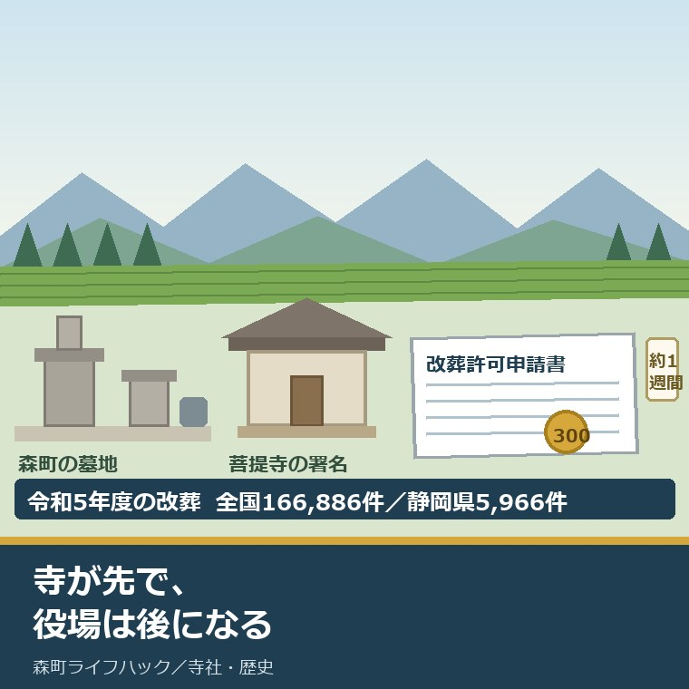
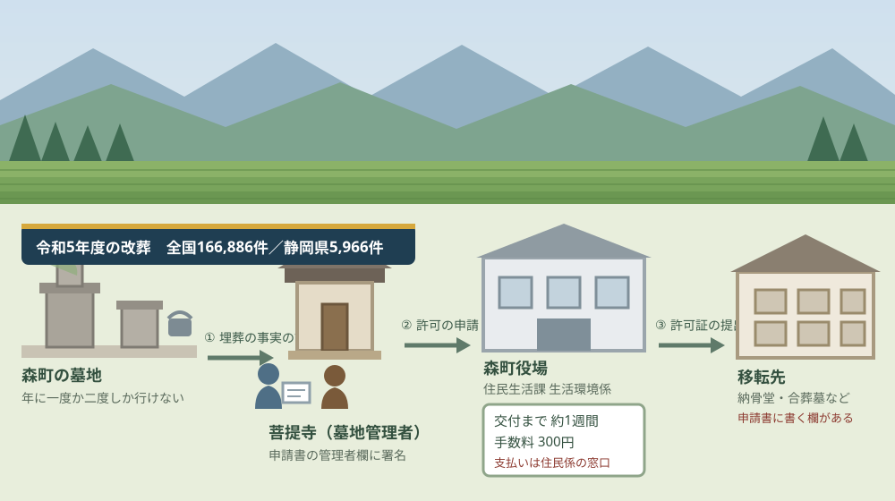
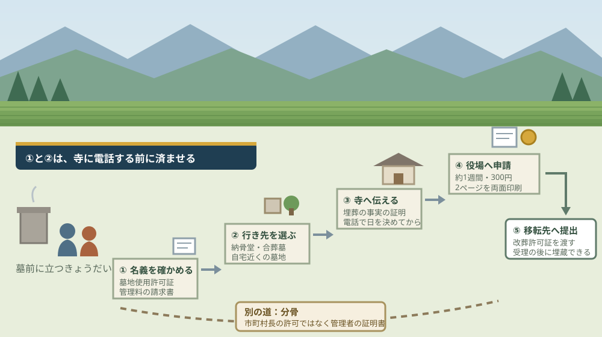

森町で墓じまい、改葬許可申請と寺への伝え方の順番

この記事の要点
Q. 森町の実家の墓を、きょうだいの誰も継げそうにありません。何から手をつけますか。
A. 寺が先で、役場は後です。改葬許可申請書には墓地管理者の埋葬証明の署名が要るため、順番を逆にできません。森町役場住民生活課生活環境係（0538-85-6314）で交付まで約1週間、手数料300円。今日は、墓地の使用名義が誰かを確かめるところまでで構いません。
静岡県周智郡森町（遠州森町）に、両親が入っている墓がある。自分たちは県外や近隣の市に住み、年に一度か二度しか行けない。この記事は、その状態のきょうだいに向けて書いています。
墓じまいという言葉は、法律の中には出てきません。手続きの名前は「改葬」です。墓地、埋葬等に関する法律の第2条第3項が定義しています。
そして改葬には、市町村長の許可が要ります。森町に墓地があるなら、許可を出すのは森町役場です。あなたが今どこに住んでいても、そこは変わりません。
厚生労働省の衛生行政報告例によれば、令和5年度の改葬は全国で166,886件、静岡県で5,966件でした。珍しい手続きではありません。
今日は2026年8月26日。森町での順番、寺にいつ何を伝えるか、そして「まだ決めない」まま進められるところまでを書きます。
公式情報から確定できること
2026年8月26日時点で、森町公式・厚生労働省の統計・墓地、埋葬等に関する法律とその施行規則から確認できたことを並べます。手続きの正式な名前は改葬許可申請です。出典は記事の末尾に載せています。
一つ目。改葬とは、遺骨を移すことです。墓地、埋葬等に関する法律第2条第3項は、改葬を「埋葬した死体を他の墳墓に移し、又は埋蔵し、若しくは収蔵した焼骨を、他の墳墓又は納骨堂に移すこと」と定義しています。
二つ目。改葬には市町村長の許可が要ります。同じ法の第5条第1項は、埋葬・火葬・改葬を行おうとする者は市町村長の許可を受けなければならないと定めています。
三つ目。許可を出すのは、遺骨が現にある場所の市町村長です。同じ法の第5条第2項は、改葬に係るものについて「死体又は焼骨の現に存する地の市町村長が行なうものとする」と定めています。申請者の住所地ではありません。
四つ目。森町の窓口は住民生活課生活環境係です。森町公式の「改葬許可について」（2022年4月1日更新）は、申請先を森町役場 住民生活課 生活環境係（電話0538-85-6314）と示しています。
五つ目。同じ墓地の中で移すときも許可が要ります。同じ森町公式のページは「また、同一墓地敷地内で移動する場合も、許可を得る必要があります」と明記しています。
六つ目。手数料は300円です。同じページは手数料を300円と記し、「※許可証は手渡しになるため、森町役場住民生活課住民係でお支払いいただきます」と注記しています。
七つ目。交付までは約1週間です。同じページの手順は「なお、許可証の交付に要する期間は約1週間です」と記しています。当日その場で受け取れる手続きではありません。
八つ目。申請書には墓地管理者の署名が要ります。同じページの手順3は、現在埋葬している墓地等の管理者がいる場合、埋葬の事実の証明として改葬許可申請書の墓地管理者欄に署名をしてもらうこと、自署でない場合は墓地管理者の押印が必要であることを示しています。
九つ目。これが「寺が先」になる理由です。同じ手順は、その署名を得た申請書を役場に提出する流れになっています。署名のない用紙を持って役場へ行っても、申請は完成しません。
十番目。許可証は移転先へ渡します。同じページの手順5は、移転先の墓地等の管理者に改葬許可証を提出することを示しています。法の第14条も、墓地の管理者は改葬許可証を受理した後でなければ焼骨の埋蔵をさせてはならないと定めています。
十一番目。申請書は2ページあります。同じ森町公式のページは、様式をPDFとExcelでダウンロードできること、「申請書が2ページ構成になっているため、両面印刷してご使用ください」と案内しています。記入例のPDFも置かれています。
十二番目。森町外に墓地がある場合は様式が違います。同じページは「市町村によって、改葬許可申請書の様式や必要書類が異なるため、詳しくは、現在、埋蔵している墓地等のある市町村へお問い合わせください」と記しています。
十三番目。申請書に書く項目は7つです。墓地、埋葬等に関する法律施行規則第2条第1項は、死亡者の本籍・住所・氏名・性別、死亡年月日、埋葬または火葬の場所、その年月日、改葬の理由、改葬の場所、申請者の住所・氏名・死亡者との続柄・墓地使用者等との関係を記載事項として挙げています。
十四番目。「改葬の場所」を書く欄があります。同じ第2条第1項第6号です。移転先が決まっていないと、申請書は完成しません。
十五番目。名義人でない人が申請するなら承諾書が要ります。同じ規則の第2条第2項第2号は、墓地使用者等以外の者が申請する場合、墓地使用者等の改葬についての承諾書を添付しなければならないと定めています。
十六番目。無縁の墓は、手続きが別枠です。同じ規則の第3条は、縁故者がない墳墓等の改葬について、無縁墳墓等の写真および位置図と、官報への掲載と立札への1年間の掲示による公告を行い、その期間中に申出がなかった旨を記載した書面の添付を求めています。
十七番目。分骨は改葬許可とは別の手続きです。同じ規則の第5条は、分骨を他の墓地等に埋蔵・収蔵しようとする者の請求があったとき、墓地等の管理者はその事実を証する書類を交付しなければならないと定めています。市町村長の許可ではありません。
十八番目。許可を受けずに改葬すると罰則があります。同じ法の第21条第1号は、第5条第1項の規定に違反した者を2万円以下の罰金または拘留もしくは科料に処すると定めています。
十九番目。許可証は5年保存されます。同じ法の第16条第1項は、墓地または納骨堂の管理者は改葬許可証を受理した日から5箇年間これを保存しなければならないと定めています。
二十番目。令和5年度の改葬は全国166,886件です。厚生労働省の衛生行政報告例（令和5年度・第6表、2025年9月25日公開）の数字です。
二十一番目。静岡県は5,966件でした。同じ表の静岡県の欄です。同じ年度の静岡県の火葬は48,445件、埋葬は3件でした。
二十二番目。無縁墳墓等の改葬は、全国で3,651件です。同じ表の別掲欄です。改葬全体166,886件に対して2.2パーセントにあたります。
二十三番目。静岡県の無縁墳墓等の改葬は、令和5年度は0件でした。同じ表の静岡県の欄は「－」と表示されています。北海道は556件、愛知県は1,156件です。
二十四番目。森町の寺院は35ヶ寺です。本サイトが宗教法人名簿の仏教法人34件と町公式資料の1ヶ寺から整理した数で、曹洞宗が28ヶ寺と全体の約8割を占めます。
二十五番目。森町の火葬場の予約は役場が受け付けます。森町公式の「死亡にともなう手続き」（2019年4月10日更新）によれば、中遠聖苑（袋井市浅名2134番地の151）への予約は森町役場住民生活課で受け付けます。担当は住民係（0538-85-6312）です。

この絵で描きたかったのは、三つの相手が順番に並んでいるという点です。寺（墓地管理者）、森町役場、そして移転先。どれか一つを飛ばすと、その先が止まります。
もう一つ描いたのは、右下の移転先が最初から絵の中にいることです。申請書に「改葬の場所」を書く欄がある以上、移転先は寺に話す前に見当をつけておく必要があります。
森町の墓に置き換えると、何が起きるか
ここからは、公表された数字を森町の規模に割り戻します。私の計算であることを先に断っておきます。
まず、全国の数字です。166,886件を365日で割ると、1日あたり約457件。日本のどこかで、毎日450以上の墓が動いていることになります。
静岡県は5,966件でした。365日で割ると1日あたり約16件です。静岡県の35市町で単純に割れば、1市町あたり年170件、週に3件強という水準になります。
森町の規模へ落とします。静岡県の人口3,468,845人に対して森町は15,945人、比率は0.46パーセントです。この比率で5,966件を割り戻すと、森町規模では年27件前後になります。
月に2件強。これは私の概算であって、森町が公表した件数ではありません。実際の件数は町の窓口に聞くしかありません。
次に、時間です。許可証の交付に約1週間。寺に署名をもらう日程を含めれば、申請を思い立ってから許可証を手にするまで、二週間から一か月を見ておく必要があります。
費用の側も、公表されているのは300円だけです。石材店に払う撤去費、寺へのお布施、移転先の費用は、この300円の外にあります。それぞれ相手が違い、金額も違います。
ここははっきり書いておきます。私は、お布施や離檀に伴う金額の相場を書きません。寺ごとに考え方が違い、外から相場を断定することは寺にも檀家にも害になると考えているからです。
森町の寺の顔ぶれは、あらかじめ知っておいて損がありません。35ヶ寺のうち28ヶ寺が曹洞宗です。宗派の偏りがどこから来たのかは、森町の寺院を宗派の数から読んだ記事に書きました。
個々の寺の所在地と宗派は、森町の寺院35ヶ寺のデータベースに地区別・宗派別で並べています。連絡先を調べるより先に、どの地区にどの宗派が多いかを見ておくと話が早くなります。
墓そのものが動いてきた土地でもあります。森の石松の墓は、これまでに何度も建て直されてきました。その経緯は大洞院の門前から訪ねる人がいなくなった墓を考えた記事に整理しています。
親が亡くなった直後の手続きと混ざりやすい点にも触れておきます。死亡届は7日以内、改葬に期限はありません。亡くなった後に何をいつまでにやるかは、家族が亡くなった後の手続きを期限と窓口で一枚にまとめた記事にあります。
墓の話は、たいてい家の話と同時に来ます。実家を売るか残すかを考えている段階なら、順番は先に整理しておいたほうが楽です。その順番は実家を売る前に確かめることを書いた記事にまとめました。
良い点：森町のこの手続きの、よくできているところ
まず、森町の改葬許可の案内でよくできているところを数えます。注文の前に置くのが、私の書き方の順番です。
一つ目。手順が1から5まで番号で書かれています。森町公式のページは、申請書の取り寄せ、記入、墓地管理者の署名、役場への提出と交付、移転先への提出を、そのままの順に並べています。読み手が順番を間違えにくい書き方です。
二つ目。交付に約1週間かかることが先に書いてあります。この一行があるかないかで、法要の日取りの決め方が変わります。書いていない自治体のページも珍しくありません。
三つ目。同一墓地の敷地内でも許可が要ることを明記しています。墓石を建て替えるだけのつもりだった方が、いちばんつまずく点です。町のページはそこを一文で押さえています。
四つ目。様式がExcelとPDFの両方で置かれています。記入例のPDFも別にあります。県外にいる子世代が、帰省の前に印刷して用意できます。
五つ目。「両面印刷してください」という一行があります。申請書が2ページ構成だと知らずに片面で持っていくと、窓口でやり直しになります。細かいようですが、遠方から来る人ほど効く注意書きです。
注文したい点：遠方のきょうだいから見て足りないところ
その上で、一事業者として注文したい点を並べます。住民生活課生活環境係が、ごみ・環境・ペット・公害とあわせて改葬を受けていることは承知の上です。
一つ目。申請と支払いの係が分かれています。申請先は生活環境係（0538-85-6314）、300円の支払いは住民係です。役場のどの窓口へ行けばよいのかが、遠方から来る人には分かりにくい。
二つ目。墓地使用者以外が申請する場合の承諾書に触れていません。施行規則第2条第2項第2号の要件です。名義が亡くなった親のままという家は多く、きょうだいの誰が申請するかで用意する書類が変わります。
三つ目。受入証明の要否が書かれていません。申請書には「改葬の場所」を書く欄がありますが、移転先の書類が要るのか要らないのかがページからは読み取れません。ここは電話で確かめるしかない項目です。
四つ目。郵送や代理でできるかが分かりません。「許可証は手渡しになるため」と書かれている以上、受け取りには来庁が要ると読めます。県外のきょうだいが、何回森町へ来ることになるのかを事前に読めません。
五つ目。ページの更新が2022年4月1日で止まっています。2022年以降、押印の扱いは各地で見直しが進みました。「自署でない場合は押印が必要」という記述が現在も同じかどうかを、更新日から判断できません。

対案・結論：今日、きょうだいで確かめられること
結論を急がないと決めたうえで、今日から動ける順番を書きます。順番はイラストのとおりです。
| 順番 | 確かめること | 確認先 |
|---|---|---|
| 1 | 墓地の使用名義は誰か。亡くなった親のままか、きょうだいの誰かに移っているか | 寺または墓地の管理者。手元の墓地使用許可証・年間管理料の請求書 |
| 2 | 遺骨は何体あるか。誰の骨が入っているか | 過去帳・位牌・墓誌の刻字。申請書は原則として1人につき1枚 |
| 3 | 移転先の候補を3つまで絞る。申請書に「改葬の場所」を書く欄がある | 納骨堂・合葬墓・自宅近くの墓地など。受入の可否と費用を先に聞く |
| 4 | 寺（墓地管理者）に伝える。埋葬の事実の証明の署名をお願いする | 菩提寺。電話で日を決めてから伺う。移転先の見当を持って行く |
| 5 | 申請書を出す。交付まで約1週間、手数料300円 | 森町役場 住民生活課 生活環境係 0538-85-6314（支払いは住民係） |
| 6 | 石材店に撤去の見積りを取る。区画を更地で返す条件を寺に確認 | 石材店と寺。費用は300円の外にある |
1は、今日できます。探すのは、墓地使用許可証か、年間管理料の請求書です。宛名になっている名前が、いまの墓地使用者です。
2も、帰省を待たずに進む場合があります。位牌と過去帳の写真が手元にあれば、何体入っているかの見当がつきます。改葬許可申請書は、原則として遺骨1体につき1枚です。
3が、いちばん時間がかかります。移転先が決まらないと、寺に話しても次の質問に答えられません。「どこへ移すのか」は、必ず聞かれます。
4は、電話から始めてください。いきなり訪ねるのではなく、日を決めて伺う。墓地管理者の署名は事務手続きですが、住職にとっては檀家が一軒減る話でもあります。
5で、ようやく役場です。両面印刷した2ページの申請書と、300円を用意してください。交付は約1週間後、手渡しです。
6は、金額の話です。石材店の撤去費と、区画をどの状態で返すかは、寺と石材店の両方に確かめる必要があります。更地の基準は墓地によって違います。
そして、1から3までで止めておく選択もあります。名義と遺骨の数と移転先の候補が分かった状態は、それだけで前に進んでいます。寺に伝えるのを来年にしても、この三つは古くなりません。
家族に残す記録
ここからは、確認した内容を紙1枚に残すための項目です。きょうだいが三人いれば、同じことを三回聞き直さないためのものです。
書き留めるのは、墓地の所在地と区画番号、墓地使用者の名義、年間管理料の額と支払先、埋葬されている人の氏名と死亡年月日、遺骨の体数、菩提寺の名前と連絡先、確認した日付です。この7つで、改葬許可申請書のほとんどの欄が埋まります。
あわせて、移転先の候補と受入条件、石材店の見積額、実家の名義と地番、実家に仏壇があるか、位牌と過去帳の置き場所、法要をいつまで続けるかの家族の考えを並べておきます。墓の話は、必ず実家と仏壇の話につながります。
実家の名義、境界、農地、道路まで含めて順に整理したい方は、ふじがおか実家カルテの森町相談窓口もご利用ください。住所が分かれば、建物と敷地のどちらについても、確認する順番を整理できます。
大石の視点
ここからは、私（大石浩之）の個人の考えです。公的な事実とは分けてお読みください。私自身が森町で改葬許可の申請に立ち会った経験があるわけではありません。以下は、条文と町の案内と統計を、段取りと家族の目で読んだ私の見方です。
最初に、言い切っておきます。寺より先に役場へ行くことはできません。申請書に墓地管理者の署名欄がある以上、制度がその順番を決めています。
この順番は、よくできていると私は考えています。役場の許可を取ってから寺に伝えるという形だったら、話はもっとこじれるからです。手続きの順序が、人への伝え方の順序と一致している。
ただ、そこに負担が乗っているのも事実です。署名をお願いする側は、頼みごとと知らせごとを同時にやることになります。「うちの墓を片づけます」と「この紙にお名前をください」を、一度の訪問で言う。
だから私は、電話を先に入れることを勧めています。その場で決めさせない時間を作るためです。住職の側にも、考える時間が要ります。
統計を見ていて、一つ引っかかった数字があります。令和5年度、静岡県の「無縁墳墓等の改葬」は0件でした。全国では3,651件、北海道556件、愛知県1,156件です。
静岡県に無縁の墓がないという意味ではないと、私は考えています。官報への掲載と、立札を1年間掲げるという手続きの重さが、そのまま0という数字になっている。これは私の推測で、裏は取れていません。
ここで、森町の話をします。まず認めたいのは、いま墓を守っている方々が払っている負担です。年間管理料、彼岸と盆の草取り、法要の段取り、寺の行事の手伝い。
森町の人口は、令和2年の17,457人から令和7年の15,945人へ、5年で1,512人減りました。減った分だけ、残った人の当番が増えます。墓地の掃除も、寺の護持も、頭数で割る仕事です。
その上で、打開が要ると思う点を具体名詞で書きます。後継と、移動と、維持費です。森町の墓が動きにくい理由は、信心の薄さではなく、この三つだと私は見ています。
後継。名義が亡くなった親のままの墓が、相当数あるはずです。名義が動いていないと、承諾書が要るのか要らないのかから始まります。
移動。県外のきょうだいが森町へ来る回数が、そのまま費用です。寺へ一度、役場へ最低一度、石材店の立会いに一度。往復の交通費と休みを数えると、300円の手数料が話の中心でないことが分かります。
維持費。年間管理料は、払い続ける限り出ていきます。墓じまいをためらう理由が「費用がかかるから」であっても、動かさなければ別の費用が毎年出る。この比較を、私は必ず紙に書いて並べます。
正直に書くと、ここで私は迷っています。墓を継ぐかどうかを、きょうだいの誰か一人が決めてよい話だとは思いません。それでも、全員の合意を待っているうちに十年が過ぎた家も見てきました。
答えは出ていません。ただ、私が案内するときは「決める会議」を先に開かないようにしています。先に開くのは、事実を持ち寄る会です。
名義は誰か。遺骨は何体か。管理料はいくらか。移転先の候補はどこか。この四つが揃うと、話は不思議とこじれにくくなります。感情の話をする前に、共通の数字があるからです。
行政に注文を付ける前に、自分の商売で同じことができるか考える。私も、お客さんに「まず名義を確かめてください」と言いながら、自分の会社の書類の名義を放置していたことがあります。
一事業者としての要望は、一つだけです。森町の改葬許可のページに、墓地使用者以外が申請する場合の承諾書のことと、支払いの窓口を一行ずつ足してほしい。県外から来る子世代が、往復の回数を読めるようになります。
最後に、判断そのものについて。今日、墓じまいをするかどうかを決める必要はありません。ただ、墓地使用許可証か管理料の請求書を1枚探して、宛名の氏名だけは確かめておいてください。
この1枚があれば、来年動くにしても、五年後にするにしても、話が最初からやり直しになりません。結論が保留のままでも、確認済みの事実が一つ増えたなら、それは前進です。
まとめ
- 墓地、埋葬等に関する法律第2条第3項は、改葬を「埋葬した死体を他の墳墓に移し、又は埋蔵し、若しくは収蔵した焼骨を、他の墳墓又は納骨堂に移すこと」と定義している
- 同法第5条第1項により改葬には市町村長の許可が必要で、同条第2項により許可を出すのは「死体又は焼骨の現に存する地の市町村長」
- 森町公式によれば、申請先は森町役場 住民生活課 生活環境係（電話0538-85-6314）
- 森町公式によれば、許可証の交付に要する期間は約1週間、手数料は300円で、支払いは住民生活課住民係の窓口
- 森町公式によれば、同一墓地の敷地内で移動する場合も許可が必要
- 森町公式の手順3は、墓地等の管理者による埋葬の事実の証明として申請書の墓地管理者欄への署名を求め、自署でない場合は押印が必要としている
- 森町公式によれば、申請書は2ページ構成で、ダウンロードの場合は両面印刷が必要。ExcelとPDFと記入例が公開されている
- 墓地、埋葬等に関する法律施行規則第2条第1項は、記載事項として改葬の理由と改葬の場所を含む7項目を挙げている
- 同規則第2条第2項第2号は、墓地使用者等以外の者が申請する場合、墓地使用者等の改葬についての承諾書の添付を求めている
- 同規則第3条は、無縁墳墓等の改葬について官報への掲載と立札への1年間の掲示による公告を求めている
- 同規則第5条により、分骨は市町村長の許可ではなく墓地等の管理者が交付する証明書で進む
- 同法第14条により、墓地の管理者は改葬許可証を受理した後でなければ焼骨の埋蔵をさせてはならない
- 同法第16条第1項により、墓地または納骨堂の管理者は改葬許可証を5箇年間保存する
- 同法第21条第1号により、第5条第1項に違反した者は2万円以下の罰金または拘留もしくは科料
- 厚生労働省の衛生行政報告例（令和5年度・第6表）によれば、改葬は全国166,886件、静岡県5,966件
- 同じ表によれば、無縁墳墓等の改葬は全国3,651件（改葬全体の2.2パーセント）で、静岡県は0件（「－」表示）
- 同じ表によれば、静岡県の火葬は48,445件、埋葬は3件
- 私の概算では、静岡県5,966件を森町の人口比0.46パーセントで割り戻すと森町規模で年27件前後（分母は令和7年国勢調査速報値の静岡県3,468,845人・森町15,945人）
- 森町の寺院は35ヶ寺で、うち曹洞宗が28ヶ寺と約8割
- 森町公式によれば、中遠聖苑（袋井市浅名2134番地の151）への予約は森町役場住民生活課で受け付ける
よくある質問
Q1. 森町の墓を片づけるとき、役場と寺のどちらへ先に行きますか。
A1. 寺が先です。森町公式によれば、改葬許可申請書には現在埋葬している墓地等の管理者による埋葬の事実の証明が要り、自署でない場合は墓地管理者の押印が必要です。この署名をもらわずに役場へ行っても申請は完成しません。申請先は森町役場住民生活課生活環境係（0538-85-6314）で、許可証の交付までは約1週間、手数料は300円です。
Q2. 森町を離れて暮らしています。改葬の申請はどこの役場に出しますか。
A2. 自分の住所地ではなく、遺骨が現にある場所の市町村です。墓地、埋葬等に関する法律第5条第2項は、改葬の許可を「死体又は焼骨の現に存する地の市町村長が行なうものとする」と定めています。森町内に墓地がある場合は森町役場住民生活課生活環境係が窓口です。森町外に墓地がある場合は、様式も必要書類も市町村ごとに違います。
Q3. 墓の名義人が亡くなった親のままです。子が申請できますか。
A3. 申請はできますが、書類が一つ増えます。墓地、埋葬等に関する法律施行規則第2条第2項第2号は、墓地使用者等以外の者が申請する場合、墓地使用者等の改葬についての承諾書を添付しなければならないと定めています。まず墓地の使用名義が誰になっているかを寺または墓地管理者に確認してください。名義の確認が、きょうだいで話す前の材料になります。
最後に一つだけ。ここに書いた窓口、手数料、期間、必要書類、統計は、いずれも2026年8月26日時点で公表されている内容です。森町での改葬許可の年間件数、受入証明書の要否、郵送や代理申請の可否、遺骨1体につき申請書が何枚必要か、押印の取扱いが2022年4月から変わっていないかは、公表資料からは確認できていません。寺へ話す前に、森町役場の住民生活課生活環境係へ電話でご確認ください。
参考にした公式情報
- 改葬許可について／静岡県森町（「埋葬されてる遺骨を他の墓地に移したり、埋葬されている焼骨を他の墓地や納骨堂に移すことを『改葬』といいます。」と説明されていること、「改葬を行うには、現在、埋葬されている墓地等の管理者の所属する市町村長へ改葬の申請を行い、許可を得ることが必要です。」とされていること、「また、同一墓地敷地内で移動する場合も、許可を得る必要があります。」と明記されていること、手順が1.改葬許可申請書を森町役場住民生活課生活環境係から取り寄せるかホームページからダウンロード、2.許可申請書に記入、3.現在埋葬している墓地等の管理者がいる場合は埋葬の事実の証明として改葬許可申請書の墓地管理者欄に署名をしてもらい自署でない場合は墓地管理者の押印が必要、4.改葬許可申請書を森町役場住民生活課生活環境係に提出し改葬許可証の交付を受ける、5.移転先の墓地等の管理者に改葬許可証を提出、の5段階であること、「なお、許可証の交付に要する期間は約1週間です。なお、交付の際には手数料300円が発生します。」と記されていること、手数料が300円で「※許可証は手渡しになるため、森町役場住民生活課住民係でお支払いいただきます。」と注記されていること、様式がExcelファイル（17.3KB）・PDFファイル（74.5KB）・記入例PDF（290.4KB）で公開され「申請書が2ページ構成になっているため、両面印刷してご使用ください。」とされていること、森町外に墓地等がある場合は「市町村によって、改葬許可申請書の様式や必要書類が異なるため、詳しくは、現在、埋蔵している墓地等のある市町村へお問い合わせください。」とされていること、担当が住民生活課生活環境係（〒437-0293 静岡県周智郡森町森2101-1、電話0538-85-6314）であることを2026年8月26日に確認。ページ更新日 2022年4月1日）
- 死亡にともなう手続き／静岡県森町（掲載されている手続きが死亡届・火葬場・葬祭費の3つであること、「死亡した事実を知った日から、7日以内に死亡届を出してください。」と記されていること、中遠聖苑（袋井市浅名2134番地の151）への予約を森町役場住民生活課で受け付けること、国民健康保険加入者に葬祭費の給付があること、担当が住民生活課住民係（電話0538-85-6312）と住民生活課国保年金係（電話0538-85-6313）であること、改葬や墓地に関する記載がないことを2026年8月26日に確認。ページ更新日 2019年4月10日）
- 衛生行政報告例 令和5年度 第6表「埋葬及び火葬の死体・死胎数並びに改葬数，都道府県－指定都市－中核市（再掲）別」／厚生労働省・e-Stat（公開日が2025年9月25日であること、担当が厚生労働省行政報告統計室であること、全国の改葬（別掲）が166,886件、無縁墳墓等の改葬（改葬の再掲）が3,651件であること、静岡県の改葬が5,966件、無縁墳墓等の改葬が「－」であること、静岡県の火葬が48,445件・埋葬が3件であること、北海道の無縁墳墓等の改葬が556件、愛知県が1,156件であることを2026年8月26日に確認）
- 墓地、埋葬等に関する法律（昭和二十三年法律第四十八号）／e-Gov法令検索（第2条第3項が改葬を「埋葬した死体を他の墳墓に移し、又は埋蔵し、若しくは収蔵した焼骨を、他の墳墓又は納骨堂に移すこと」と定義していること、第5条第1項が「埋葬、火葬又は改葬を行おうとする者は、厚生労働省令で定めるところにより、市町村長（特別区の区長を含む。以下同じ。）の許可を受けなければならない」としていること、第5条第2項が改葬に係る許可を「死体又は焼骨の現に存する地の市町村長が行なうものとする」としていること、第8条が改葬許可証の交付を定めていること、第14条第1項が「墓地の管理者は、第八条の規定による埋葬許可証、改葬許可証又は火葬許可証を受理した後でなければ、埋葬又は焼骨の埋蔵をさせてはならない」としていること、第16条第1項が墓地又は納骨堂の管理者による許可証の5箇年間の保存を定めていること、第21条第1号が第5条第1項の規定に違反した者を2万円以下の罰金又は拘留若しくは科料に処するとしていることを2026年8月26日に確認）
- 墓地、埋葬等に関する法律施行規則（昭和二十三年厚生省令第二十四号）／e-Gov法令検索（第2条第1項が改葬許可の申請書の記載事項として死亡者の本籍・住所・氏名及び性別、死亡年月日、埋葬又は火葬の場所、埋葬又は火葬の年月日、改葬の理由、改葬の場所、申請者の住所・氏名・死亡者との続柄及び墓地使用者等との関係の7項目を挙げていること、第2条第2項第1号が「墓地又は納骨堂（以下「墓地等」という。）の管理者の作成した埋葬若しくは埋蔵又は収蔵の事実を証する書面」の添付を求めていること、同項第2号が「墓地使用者等以外の者にあつては、墓地使用者等の改葬についての承諾書」等の添付を求めていること、第3条が無縁墳墓等の改葬について写真及び位置図と、官報への掲載および立札への1年間の掲示による公告を経てその期間中に申出がなかった旨を記載した書面の添付を求めていること、第4条が改葬許可証を別記様式第3号によるとしていること、第5条第1項が分骨について墓地等の管理者による埋蔵又は収蔵の事実を証する書類の交付を定めていることを2026年8月26日に確認）
- 静岡県森町の寺院／森町ライフハック（森町の寺院が35ヶ寺であること、宗教法人名簿の仏教法人34件に町公式資料にのみ名前がある1ヶ寺を加えた数であること、曹洞宗28ヶ寺・日蓮宗2ヶ寺・真言宗2ヶ寺・天台宗2ヶ寺・浄土宗1ヶ寺という内訳であることを2026年8月26日に確認）

最終確認日：2026-08-26 ／ 本記事は公表情報と執筆者の見解を分けて記載しています。森町での改葬許可の年間件数、受入証明書の要否、郵送や代理申請の可否、遺骨1体につき必要な申請書の枚数、2022年4月以降の押印の取扱いの変更は、公表資料から確認できていません。お布施や離檀に伴う金額は寺ごとに異なるため、本記事では相場を記載していません。制度・数値は変更されることがあります。動く前に、森町役場の住民生活課生活環境係と菩提寺へご確認ください。